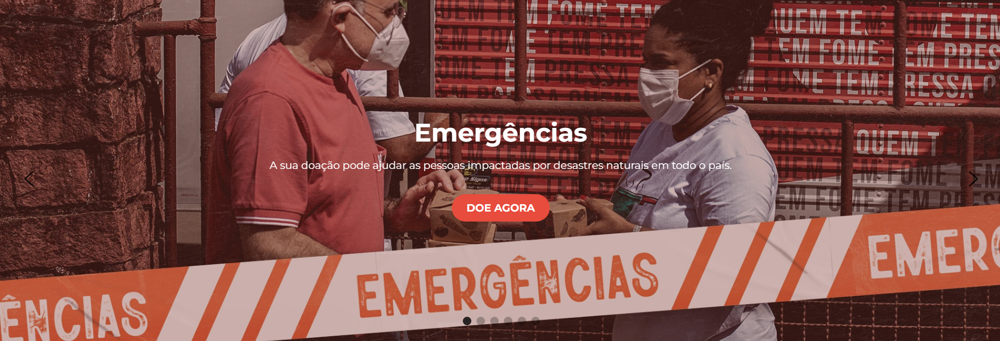
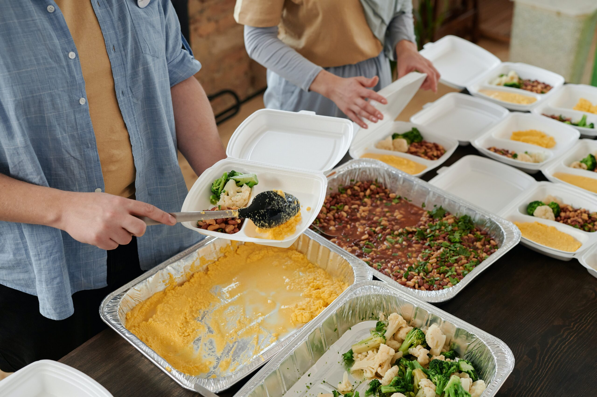
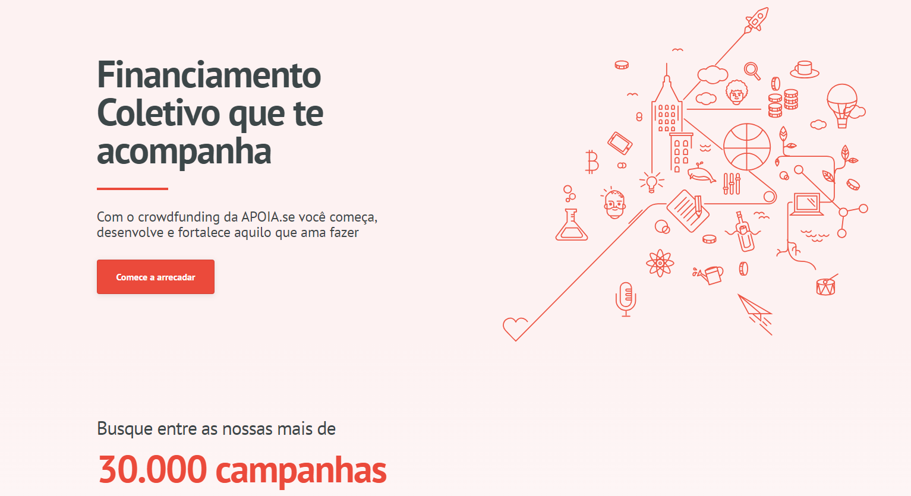
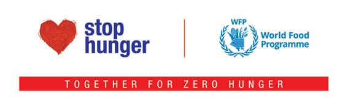

Ação da Cidadania
A Ação da Cidadania foi fundada em 1993 pelo sociólogo Herbert de Souza, conhecido como Betinho. Criada no auge do Movimento pela Ética na Política, ela se transformou em um dos movimentos sociais mais reconhecidos do Brasil. O projeto está presente em 19 estados do país e no Distrito Federal. Em 2020, arrecadou mais de R$50 milhões e cerca de 10 mil toneladas de alimentos. Existem várias maneiras de apoiar a Ação da Cidadania. Além de colaborar com cestas básicas, alimentos individuais não perecíveis ou doações em dinheiro, também é possível colaborar mensalmente com um valor fixo de doação que é cobrado de maneira recorrente. Acesse o link para mais informações.
Amigos do Bem

A ONG Amigos do Bem surgiu em 1993 com a missão de transformar vidas por meio da educação e de projetos autossustentáveis, capazes de promover desenvolvimento e inclusão social, erradicando a fome e a miséria. Hoje, o projeto é um dos maiores do país e atende, regularmente. mais de 75 mil pessoas no sertão de Alagoas, de Pemambuco e do Ceará
Distribuição de alimentos para familias do sertão nordestino de Amigos do Bem (Foto: reprodução Instagram) Você pode doar de várias maneiras, seja por depósitos em conta e pela chave PIX da iniciativa ou fazer transferências por diversos aplicativos como PayPal, PicPay e Ame.
Tel.: (11) 3019-0100
E-mail: informacoes@amigosdobem.org
Amparaí

O Amparai foi criado em março de 2020 e se tornou o principal projeto de ONG Mistural que tem sede no Rio Grande do Sul. Ele surgiu a partir do aumento da fome e agravamento da crise económica e sanitária. O objetivo é distribuir diariamente refeições para pessoas em situação de vulnerabilidade social em Porto Alegre.
Já foram distribuidas mais de 130 mil quentinhas e a meta mensal está definida em arrecadar R$24 mil, valor que cobre os custos de produção para cinco mil quentinhas. As doações podem ser feitas pelo site do projeto, PIX ou transferência bancária. Quem estiver interessado também pode escolher para qual objetivo destinar o seu dinheiro. Confira mais neste link.
Banco de Alimentos

A ONG Banco de Alimentos surgiu a partir de uma ideia da economista Luciana Chinaglia Quintão e se tornou uma associação civil que recolhe alimentos que já perderam valor de prateleira no comércio e indústria, mas ainda estão aptos para consumo, e os distribui onde são mais necessários.
No lugar de descartar alimentos, os parceiros da iniciativa doam os excedentes à ONG que repassa às entidades sociais cadastradas no projeto. De 1998 até 2020, já foram mais de 13 mil toneladas de alimentos entregues com cerca de 23 mil pessoas beneficiadas diariamente. As doações podem ser feitas por pessoas físicas e empresas. A colaboração pode ser única ou mensal via cartão de crédito ou boleto bancário. Para mais informações, acesse o link.
Instituto Stop Hunger

O Stop Hunger foi criado em 1996 por colaboradores da Sodexo dos Estados Unidos, uma das maiores empresas de serviços de alimentação e gestão de facilidades do mundo. Atualmente, o projeto é uma força de liderança global na luta contra a fome e a má nutrição e, no Brasil, desde 2003, promove diversas iniciativas. Há seis anos, constituiu-se o Instituto Stop Hunger no país.
Você pode doar em dinheiro por meio de transferência bancária ou então pelo código PIX disposto no site da iniciativa. O Stop Hunger faz sazonalmente campanhas de arrecadação, então você pode ficar ligado no site e nas redes sociais do projeto.